MICROSOFT 365 COPILOT 博客
Microsoft 365 Copilot 新功能速覽 | 2026 年 5 月
本文為 Microsoft 365 Copilot 官方月度更新（2026 年 5 月刊）的中文整理版。每月我們都會梳理新增功能與改進，幫助 Microsoft 365 管理員及時瞭解 Copilot 的最新能力，讓用戶在日常所用的應用中更高效地完成工作。

面向用戶的能力
Anthropic Claude Opus 4.8 正式上線
Anthropic 的 Claude Opus 4.8 現已在 Microsoft 365 Copilot 中可用，為更高階的工作場景提供了新的模型選擇。該模型擅長處理複雜的多步驟任務和長週期工作流，在工具選擇、指令遵循和任務完成度方面均有提升，在起草文檔、分析數據和製作演示文稿等任務上也有更出色的表現。與 Work IQ 配合使用時，輸出結果會基於組織自身的數據接地，從而更具相關性和準確性。
可用範圍：已在 Copilot Cowork（Frontier）中提供，並正在向 Copilot Studio 早期發佈週期環境，以及面向 Microsoft 365 Copilot 授權用戶的 Copilot Chat、Excel 和 PowerPoint 推出。
Copilot 應用：界面煥新、Notebooks 增強與 Apple CarPlay 支持
- 全新設計6 月推出
Microsoft 365 Copilot 應用改版後帶來了更精簡、以聊天為中心的體驗：簡化了對話與回覆的版式、優化了導航，並提供了新的工作組織方式，幫助用戶保持專注、維持上下文，更高效地推進工作。 - Copilot Notebooks 界面更新6 月推出
應用內的 Copilot Notebooks 界面重新設計，幫助用戶按項目組織聊天與工作成果。新界面把對話、產出物和引用源集中在一處，協作與推進工作更加順暢。同時，Microsoft 365 Copilot 應用與 OneNote 應用中的 Copilot Notebooks 保持同步，用戶可以在兩種體驗之間自由切換，以最順手的方式使用同一個筆記本。 - 將單場 Teams 會議作為知識源5 月已在 Frontier 推出，6 月全球推出
Copilot Notebooks 現在可以引用具體的 Teams 會議，把轉錄文本、筆記、聊天記錄和共享內容一併納入筆記本。讓 Copilot 基於工作背後的討論、決策和上下文來作答，答案會更準確、更連貫。 - 通過 Excel 代理生成電子表格5 月已在 Frontier 推出，6 月全球推出
Copilot Notebooks 現在可以直接從筆記本調用 Excel 代理生成電子表格。Copilot 會提取筆記本中已有的內容與引用源，起草一份結構清晰、格式統一、可繼續細化的表格。流程啟動後，Excel 代理會通過澄清性提問收集信息，以便按每個具體需求定製表格。用戶隨後可以在 Excel 中繼續與 Copilot 協作編輯和調整。 - 信息圖（Infographics）5 月已在 Frontier 推出，6 月全球推出
該功能可自動把筆記本內容轉換成清晰、可直接分享的可視化摘要。系統會分析筆記本中的信息與引用源，生成突出關鍵要點、關聯關係和洞察的信息圖。用戶無需手動製作幻燈片或視覺素材，即可把技術筆記、項目進展或文檔瞬間轉化為通俗易懂的圖形，更有效地傳達複雜信息。 - Apple CarPlay 支持5 月已推出
Copilot 現已登陸 Apple CarPlay，讓用戶在駕車時也能免手操作地掌握工作動態。通過車載顯示屏和音響系統，用戶可以用語音發起新對話或繼續已有的聊天，從而更安全地回顧當天安排、梳理優先事項和記錄靈感，全程無需打字或看手機。
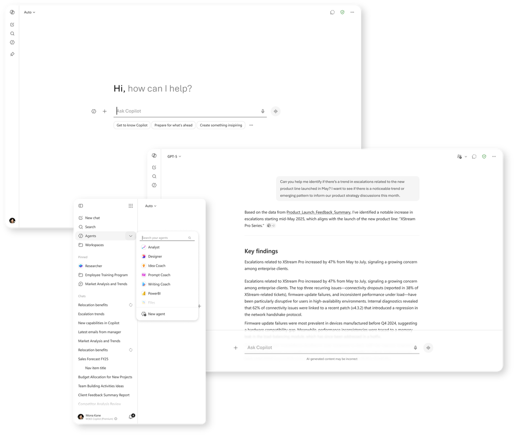
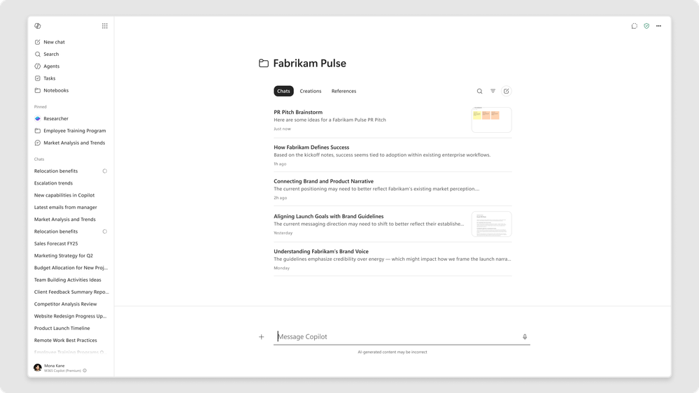

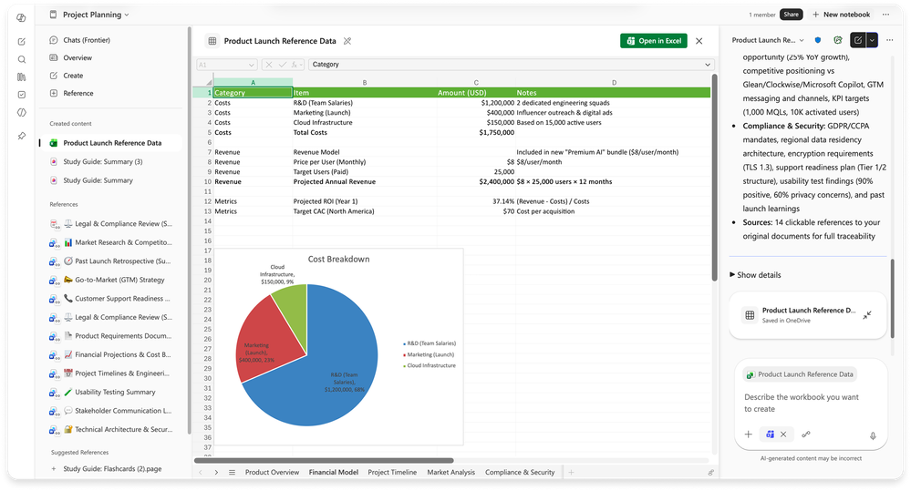
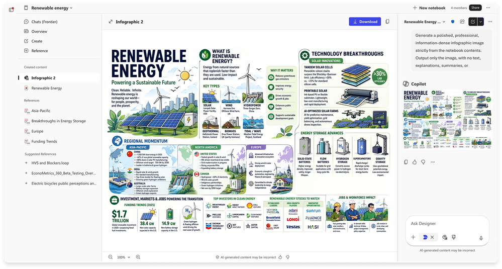
GPT-5.5 Instant 進入 Copilot Chat 與 Copilot Studio
5 月已推出OpenAI 的 GPT-5.5 Instant 現已在 Microsoft 365 Copilot 和 Microsoft Copilot Studio 中可用，在日常辦公任務、圖像分析和 STEM 類問題上的回答質量更高。在 GPT-5.3 Instant 的基礎上，新模型的回答更清晰凝練、冗餘更少，也更少提出不必要的追問，用戶用更少的來回就能得到有用的答案。在 Copilot Chat 的 GPT 模型選擇器中，它顯示為「GPT-5.5 Quick response」；在 Copilot Studio 中則以「GPT-5.5 Chat」的名稱向早期發佈週期環境推出。
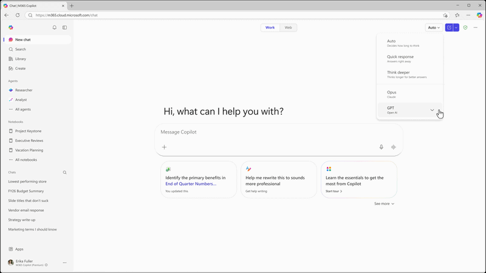
Copilot 提示詞庫內容擴充
全新的提示詞庫（Prompt Gallery）幫助用戶從「不知道 Copilot 能做什麼」直接過渡到「馬上動手試試有用的任務」。它把現成可用的提示詞、簡明指引和以任務為導向的創意集中在一處，涵蓋內容起草、會議準備、信息分析和快速補齊工作進度等場景。用戶可以在這裡找到合適的起點、直接在 Copilot 中試用某條提示詞，並在組織內分享工作流。
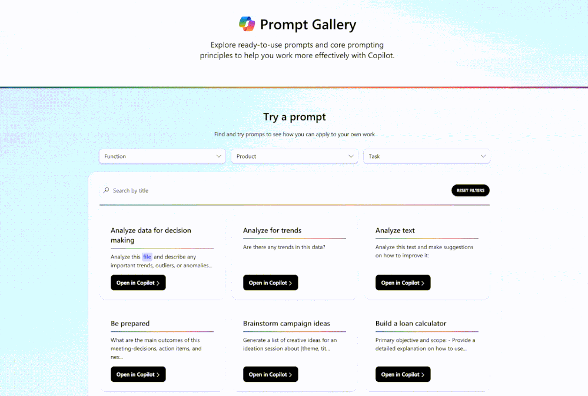
學習代理（Learning Agent）
6 月推出學習代理由 Work IQ 驅動，並與 AI Skills Navigator（預覽版）集成，提供個性化的、融入工作流的學習體驗，通過貼合崗位角色與日常工作的內容，幫助員工更快建立 Copilot 與 AI 技能。它會提供相關技巧、技能評估、定製化學習計劃、認證路徑和角色扮演練習，讓人們在實際工作流中邊做邊學、持續精進。
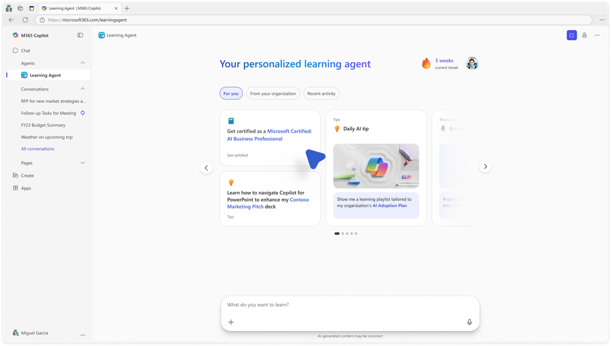
Outlook 中的 Copilot：賬戶選擇器
5 月已推出在 Windows 版 Outlook 中擁有多個已啟用 Copilot 賬戶的用戶，現在可以在日曆的 Copilot 側邊窗格中看到一個賬戶下拉菜單。該選擇器清楚標明 Copilot 當前代表哪個賬戶操作，用戶也可以方便地切換賬戶。對於多租戶用戶而言，這消除了一個常見的困惑來源，也避免了誤操作到其他賬戶。
Teams 中的 Copilot：來電代接、回顧刪除與視頻回顧
- Copilot 來電代接6 月向 Frontier 推出
當用戶無法接聽 Teams Phone 來電時，Copilot 會代為接聽，捕捉來電意圖與細節並生成摘要，讓用戶按自己的節奏跟進，不錯過重要溝通。它還能通過 Microsoft Bookings 安排後續預約，方便用戶之後與重要來電者會面。這樣既保證了響應速度，又不打斷會議與深度工作所需的專注。 - 永久刪除會議記錄5 月已推出
組織者現在可以通過回顧頁面「更多（…）」菜單中的新選項，永久刪除會議錄製、轉錄文本、AI 摘要和筆記。共享文件仍保留在原位置。用戶無需管理員配置即可快速、放心地清理會議產物，配合留存策略要求。 - 視頻回顧（Video recap）4 月已推出
補會議的效率大幅提升。視頻回顧會把錄製的 Teams 會議轉換成簡短的解說式精華集錦，用 AI 生成的旁白搭配真實片段，串起會議中的關鍵時刻、決策和共享畫面。無論是錯過了會議還是想重溫重點，用戶都能快速把握會議脈絡、氛圍和結論，不必再拖動進度條翻找完整錄像。
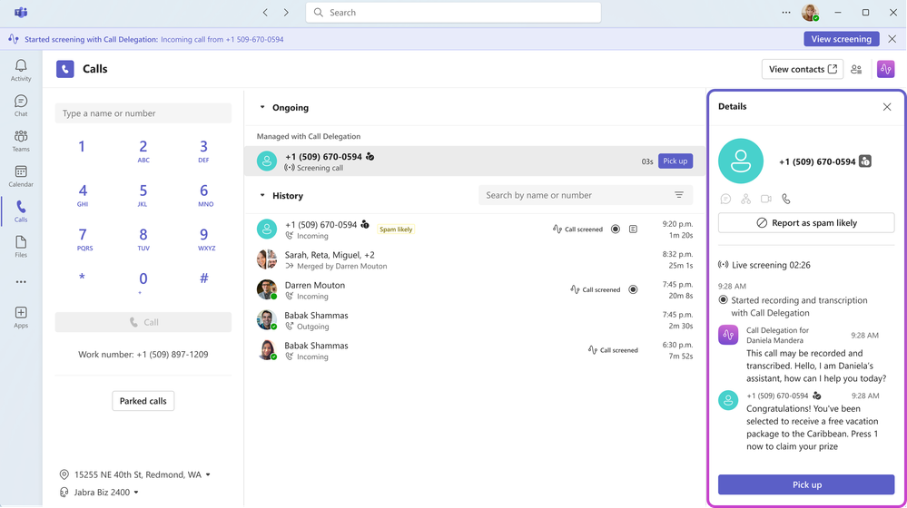
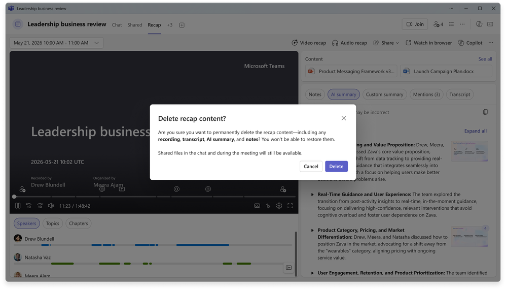
Word 中的 Copilot：文檔摘要、個性化與寫作建議
- 近期文件活動彙總5 月已推出
Copilot 會在聊天窗格中直接呈現一份近期文件活動的彙總摘要，包括最新編輯和用戶批註，幫助用戶快速瞭解文檔中發生了哪些變化。這減少了在編輯記錄與批註之間來回切換的時間，也確保團隊始終對齊到最新的更新與反饋。 - Copilot 記憶帶來個性化回覆5 月已推出
在 Word 中使用 Copilot 時，Copilot 記憶會依據相關的用戶上下文和過往交互來個性化回覆，用戶不必反覆重申自己的偏好和背景信息。隨著時間推移，回覆會越來越貼合個人需求、越來越高效實用，從而提升全組織範圍內代理交互的整體質量與效果。 - 文檔頂部的個性化洞察5 月已推出
Word 現在會在文檔頂部展示個性化洞察，幫助用戶無需滾動或搜索就能快速定位到最相關的內容，讓文檔更易於瀏覽、有用信息更容易被找到。 - Word 代理寫作建議5 月已在 Web 端推出
寫作建議會在用戶撰寫文檔的過程中實時給出改進表達清晰度、語氣和結構的建議，且提示直接出現在寫作流中。這讓用戶在不被打斷的情況下產出更高質量的內容，從而加快編輯速度、讓溝通表達更一致，並整體提升組織內的文檔質量。
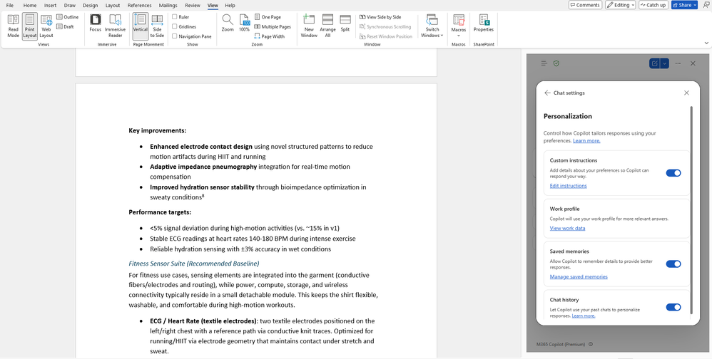
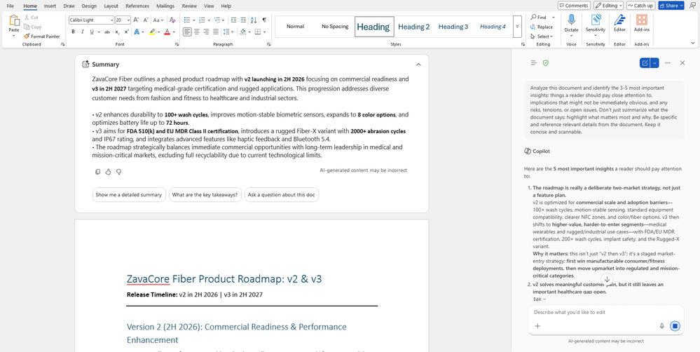
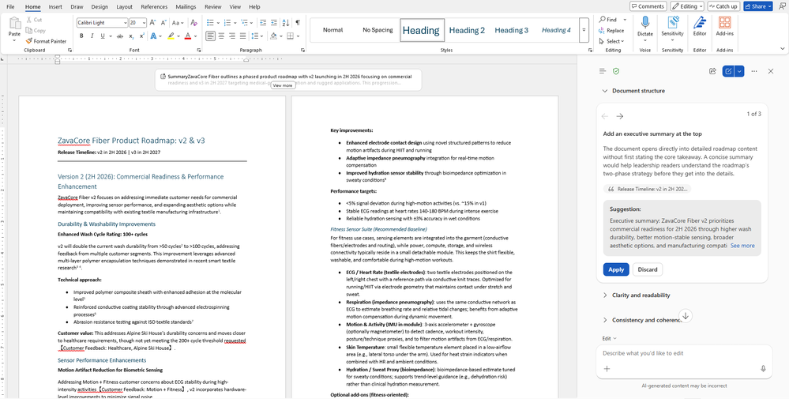
PowerPoint 中的 Copilot：幻燈片講解與內置技能
PowerPoint Live 中的幻燈片講解6 月推出
在會議中，參會者現在可以選中幻燈片上的文字並讓 Copilot 解釋其含義，從而快速弄清陌生術語、複雜概念或幻燈片細節，而不必打斷演講者。對組織來說，這讓線上演示更易理解、信息量更足、也更容易跟上。
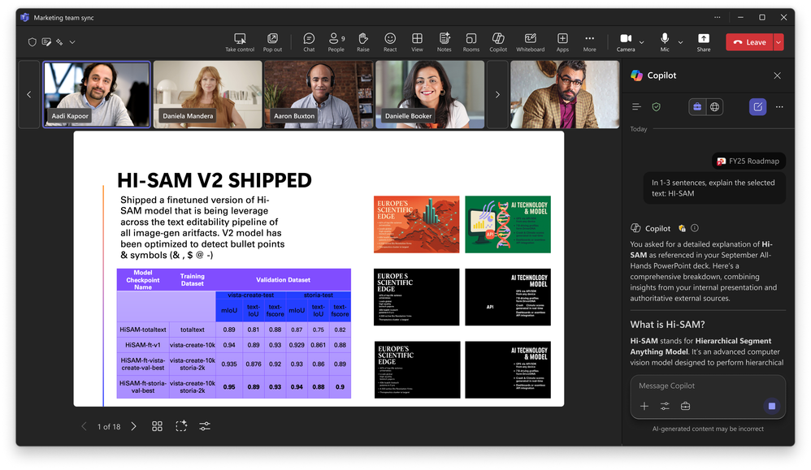
內置技能（built-in skills）5 月已推出
PowerPoint 中的 Copilot 新增了一系列內置技能，一鍵即可作用於用戶的演示文稿。用戶不必再費心撰寫冗長的提示詞，只需選擇相應技能，剩下的交給 Copilot。目前提供三項新技能：
- 審閱本演示文稿：逐頁給出改進結構、清晰度和敘事邏輯的建議，用戶可自行審閱並採納。
- 可視化本頁幻燈片：把文字密集的幻燈片轉化為吸引人的視覺呈現，提升整體觀感和表現力。
- 準備答疑：幫助用戶找出演示中的薄弱環節，預判聽眾可能提出的問題。
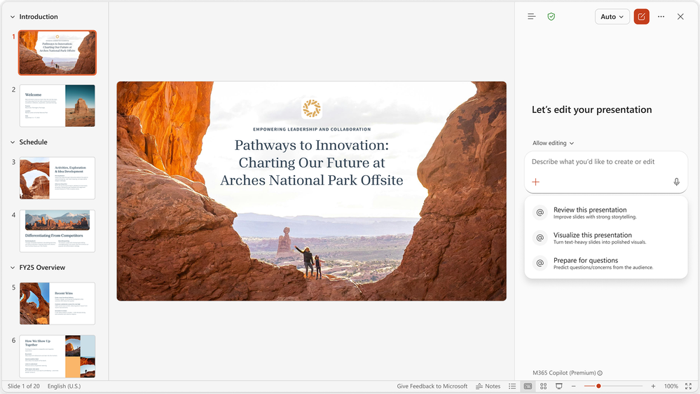
SharePoint 中的 Copilot：自定義技能
5 月已推出SharePoint 中的 Copilot 現在可以把可重複的多步驟工作流沉澱為特定站點的可複用資產，供團隊穩定地反覆執行。用戶通過自然語言即可創建並保存技能，用來固化組織標準（例如文檔規範和清單）、彙總內容或審查流程，從而持續獲得可靠且貼合上下文的結果。
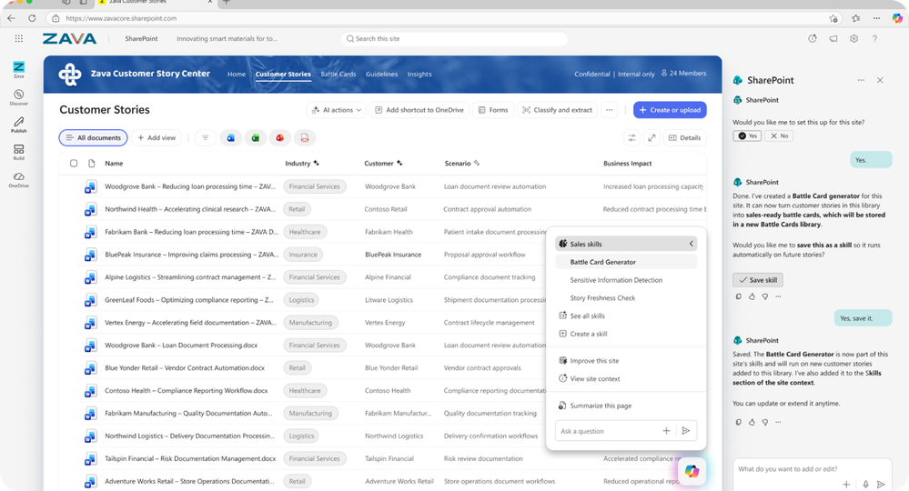
面向 IT 管理員的能力
Copilot 產品組合的 ISO 認證範圍擴大
Microsoft 正在把 ISO/IEC 42001:2023（簡稱「ISO 42001」）認證擴展到整個 Copilot 產品組合，這也是迄今為止所有 AI 公司中覆蓋範圍最廣的 ISO 42001 認證，體現了我們在負責任 AI 領域的持續投入與引領。
我們將繼續保持 Microsoft 365 Copilot 與 Copilot Chat、Microsoft Security Copilot 以及 Microsoft Foundry 的現有認證（這些產品於 2025 年由 IAS 認可的認證機構 Mastermind Assurance 首次認證）。同時，認證範圍新增以下四項 Copilot 體驗：
- Microsoft Copilot Studio——用於構建自定義 AI 代理的低代碼平臺
- GitHub Copilot——全球採用最廣泛的 AI 開發者工具
- Microsoft Dragon Copilot——面向醫生、護士和放射科醫師的行業領先 AI 臨床助手
- Copilot Health——基於權威醫學資料的 AI 健康助手
認證詳情可訪問 Service Trust Portal 查看。
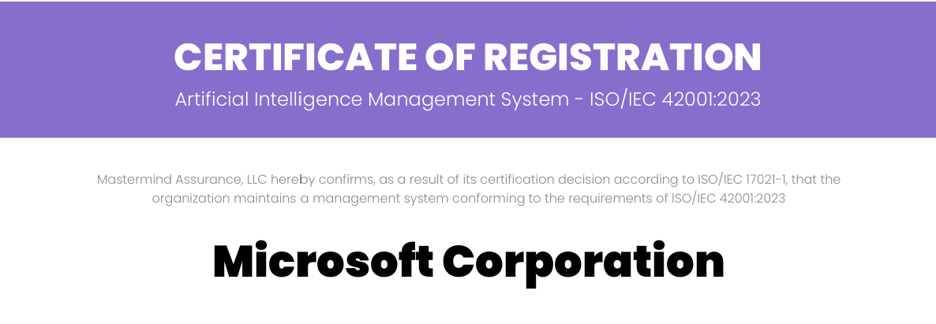
全新 Copilot 採用中心（Adoption Hub）
全新的 Copilot 採用中心為部署負責人提供了一個簡明入口，可在此找到相關指南、工具和下一步行動建議，幫助用戶上手 Copilot 並提升使用頻率。負責人可以按最貼合自身情況的路徑起步——無論是幫助一個小團隊入門，還是在全組織範圍內主導採用。中心還會精選內容，說明面向不同需求的用戶應當分享哪些材料。無論部署負責人是想自己用好 Copilot，還是想幫團隊用得更好，這裡都是起點。
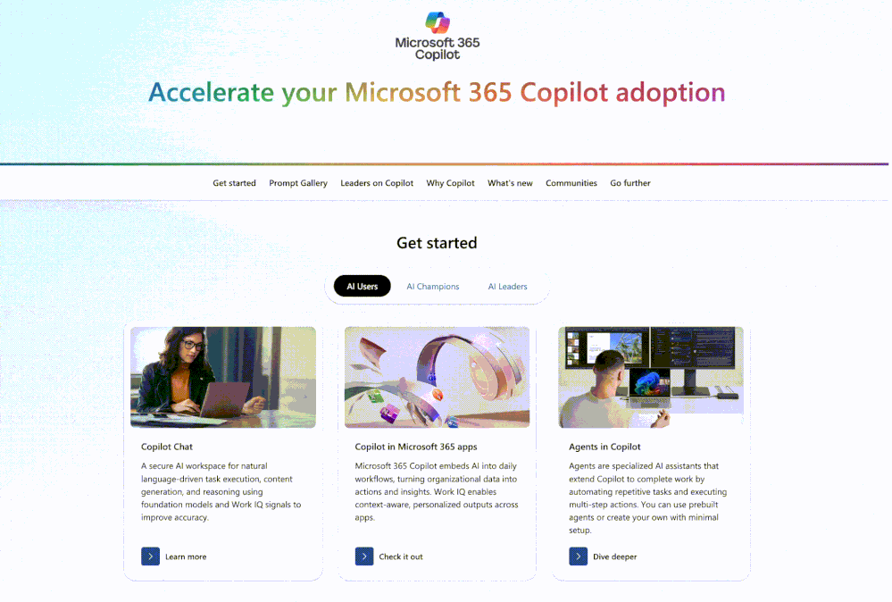
聯合式 Copilot 連接器（Federated Copilot connectors）5 月已推出
聯合式 Copilot 連接器現已可用，通過模型上下文協議（MCP）把實時企業數據引入 Copilot。這些連接器可將數百個 SaaS 系統中的實時數據接入 Work IQ，在保持原生安全管控的同時，讓 Copilot 在 Microsoft 365 內容之外獲得更豐富的業務上下文。首批連接器覆蓋 LSEG、Moody's、HubSpot 和 Notion 等合作伙伴，目前已在 Copilot Chat 和 Researcher 中可用，其中 LSEG 和 Moody's 還支持 Excel。組織也可以為內部系統自行構建自定義聯合連接器，進一步擴展 Copilot 對企業數據的訪問範圍。
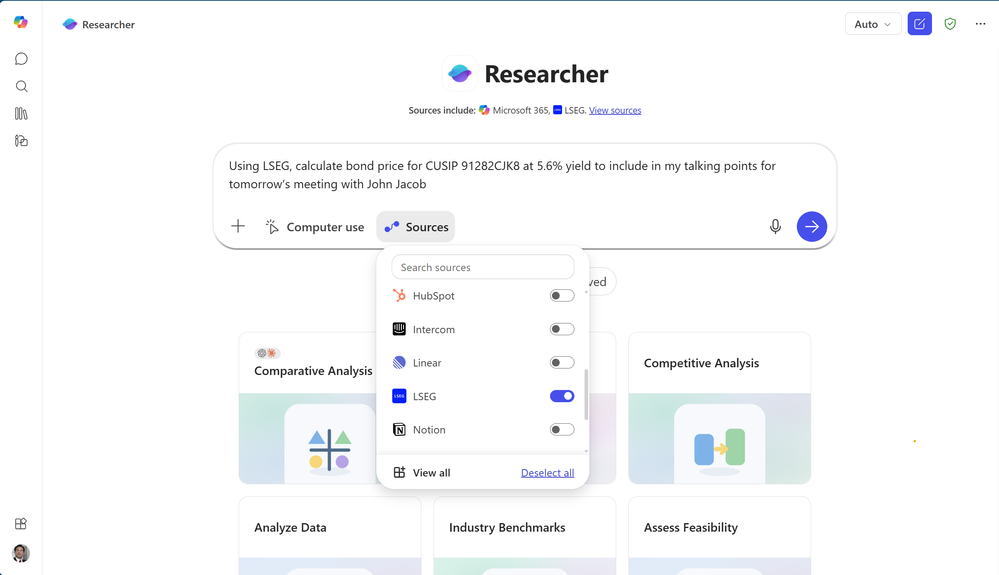
為敏感內容啟用水印
3 月正式發佈，5 月 GCC-High，6 月 DoDTeams 會議內容水印是一項安全功能，允許會議組織者在會議共享內容上疊加每位與會者的郵箱地址水印。在「會議選項」中啟用後，水印會對所有與會者強制生效，有助於遏制對敏感材料的截屏行為，讓用戶在會議中分享機密信息時多一層問責保障、更加安心。